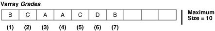

5.3 Varrays (Variable-Size Arrays)
A varray (variable-size array) is an array whose number of elements can vary from zero (empty) to the declared maximum size.
To access an element of a varray variable, use the syntax variable_name(index). The lower bound of index is 1; the upper bound is the current number of elements. The upper bound changes as you add or delete elements, but it cannot exceed the maximum size. When you store and retrieve a varray from the database, its indexes and element order remain stable.
Figure 5-1 shows a varray variable named Grades, which has maximum size 10 and contains seven elements. Grades(n) references the nth element of Grades. The upper bound of Grades is 7, and it cannot exceed 10.
Figure 5-1 Varray of Maximum Size 10 with 7 Elements

Description of "Figure 5-1 Varray of Maximum Size 10 with 7 Elements"
The database stores a varray variable as a single object. If a varray variable is less than 4 KB, it resides inside the table of which it is a column; otherwise, it resides outside the table but in the same tablespace.
An uninitialized varray variable is a null collection. You must initialize it, either by making it empty or by assigning a non-NULL value to it. For details, see "Collection Constructors" and "Assigning Values to Collection Variables".
Topics
See Also:
-
Table 5-1 for a summary of varray characteristics
-
"varray_type_def ::=" for the syntax of a
VARRAYtype definition -
"CREATE TYPE Statement" for information about creating standalone
VARRAYtypes -
Oracle Database SQL Language Reference for more information about varrays
Example 5-4 Varray (Variable-Size Array)
This example defines a local VARRAY type, declares a variable of that type (initializing it with a constructor), and defines a procedure that prints the varray. The example invokes the procedure three times: After initializing the variable, after changing the values of two elements individually, and after using a constructor to the change the values of all elements. (For an example of a procedure that prints a varray that might be null or empty, see Example 5-26.)
Live SQL:
You can view and run this example on Oracle Live SQL at Varray (Variable-Size Array)
DECLARE
TYPE Foursome IS VARRAY(4) OF VARCHAR2(15); -- VARRAY type
-- varray variable initialized with constructor:
team Foursome := Foursome('John', 'Mary', 'Alberto', 'Juanita');
PROCEDURE print_team (heading VARCHAR2) IS
BEGIN
DBMS_OUTPUT.PUT_LINE(heading);
FOR i IN 1..4 LOOP
DBMS_OUTPUT.PUT_LINE(i || '.' || team(i));
END LOOP;
DBMS_OUTPUT.PUT_LINE('---');
END;
BEGIN
print_team('2001 Team:');
team(3) := 'Pierre'; -- Change values of two elements
team(4) := 'Yvonne';
print_team('2005 Team:');
-- Invoke constructor to assign new values to varray variable:
team := Foursome('Arun', 'Amitha', 'Allan', 'Mae');
print_team('2009 Team:');
END;
/
Result:
2001 Team: 1.John 2.Mary 3.Alberto 4.Juanita --- 2005 Team: 1.John 2.Mary 3.Pierre 4.Yvonne --- 2009 Team: 1.Arun 2.Amitha 3.Allan 4.Mae ---